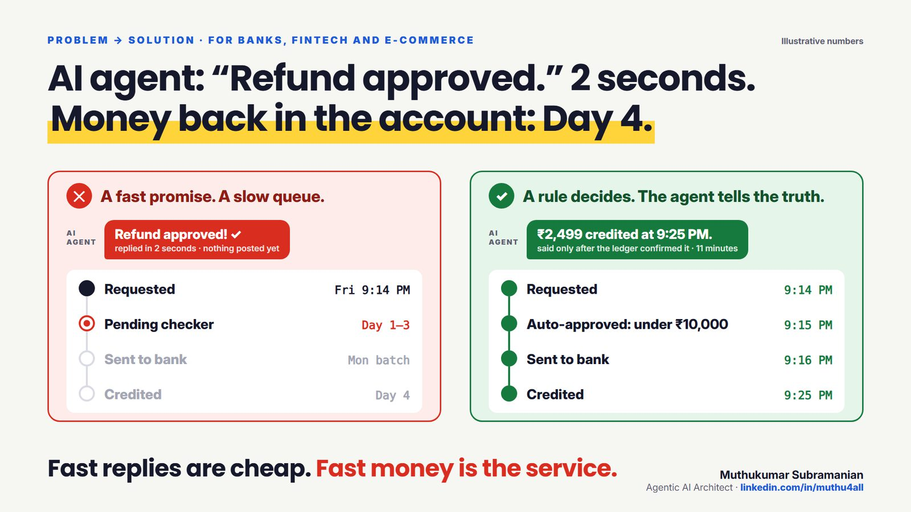
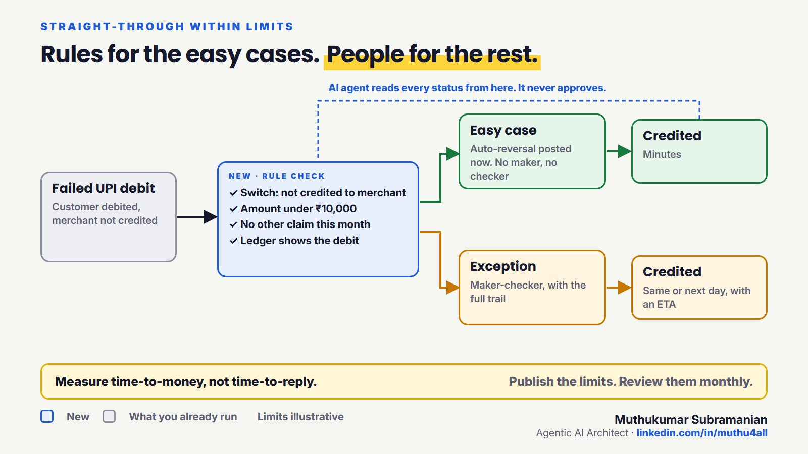
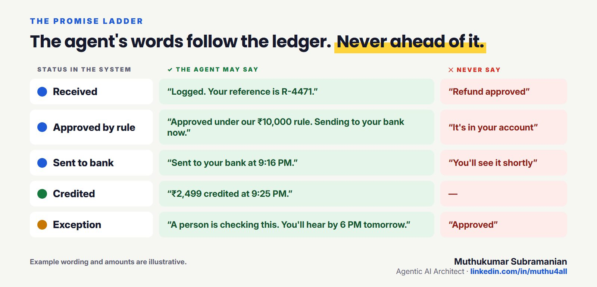

The AI Agent Approved the Refund in 2 Seconds. The Core Banking System Took 4 Days.
By Muthukumar Subramanian · Agentic AI Architect

Friday, 9.12 PM. Kavya in Coimbatore pays ₹2,499 for a pair of shoes by UPI. The app spins, then says "Payment failed." Her account says ₹2,499 debited.
She pays again. This one goes through. Now she's ₹2,499 short.
At 9.14 PM she asks her bank's new AI assistant. Two seconds later: "Refund approved! You'll see the amount back in your account shortly."
Saturday, nothing. Sunday, nothing. She calls the helpline twice and posts a screenshot of the chat on X, tagging the bank. Monday, still nothing.
The money comes back on Tuesday. Day 4. (Kavya is a composite, and every number here is illustrative.)
Here's the part nobody likes: the bank didn't break a single rule. Under the RBI's 2019 circular on failed transactions, a UPI payment to a merchant that debits the customer without confirming at the merchant must be auto-reversed within T+5 days. Day 4 is legal.
It's still a lost customer.
The problem: the front end got fast. The back office didn't.
There are two failures in Kavya's story, and only one is new.
The old one is the queue. A failed debit lands in a reconciliation file. Someone matches it against the switch report. A maker raises the reversal, a checker approves it, and the core banking system posts it in the next batch. For a ₹2,499 case with a clear status, that's four people's time spent on a decision a rule could make.
The new one is the agent. It answered in two seconds, in perfect English, and it promised something the back office hadn't done. "Refund approved" meant "complaint logged". To Kavya, it meant "money coming".
My slightly contrarian view: the agent wasn't too slow. It was too fast. A quick reply on top of a slow back office isn't better service. It's a faster way to make a promise you can't keep.
And that promise has a cost. In 2024, a Canadian tribunal ordered Air Canada to honour what its chatbot had told a customer about a bereavement fare. The airline argued the chatbot was responsible for its own words. The tribunal didn't accept that. Whatever your agent says, your company said.

The solution: straight-through within limits
Don't make the agent slower. Make the easy cases fast all the way down, and make the agent honest about the rest.
→ 1. Sort easy from hard. A failed UPI debit where the switch status says "not credited to merchant", under ₹10,000, on an account with no disputes this month, is easy. Everything else is an exception.
→ 2. Let a rule decide, not the agent. Plain code checks the limits and raises the reversal. No maker, no checker, no batch wait. The agent explains; it doesn't approve.
→ 3. Say only what the ledger says. The agent's words are tied to the real status: Received, Approved, Sent to bank, Credited. It never says "approved" until the system of record does.
→ 4. Send exceptions to people, with context. Large amounts, repeat claims, mismatched records. Maker-checker stays, but the checker gets the full trail, not a blank ticket.
→ 5. Measure time-to-money, not time-to-reply. "Answered in 2 seconds" is a vanity number. "Money back in 11 minutes" is the one the customer feels.
And publish the limits. "Failed UPI debits under ₹10,000 are reversed automatically, usually within the hour" is a sentence that stops three helpline calls.
Fast replies are cheap. Fast money is the real service.
👉 [GIF: B-day14-4-in-article-two-clocks.gif]
Caption: Two clocks. The agent's promise and the back office's reality, then the straight-through lane where easy cases flow and one exception goes to a person.
Who sets the limits, and who owns them
This is where two newer roles come in, and the titles are still settling.
An AgentOps engineer runs agents in production much as an SRE runs services. Here, they own the limits: the ₹10,000 ceiling, the "one claim a month" rule, the alerts when auto-reversals spike. If fraudsters find the rule, this person sees it first.
A forward deployed engineer (FDE), an engineer who works inside the customer's team and ships on their real systems, sits with the reconciliation desk for two weeks. They find out which cases are truly easy, which ones only look easy, and why the core system posts reversals at 6 PM and not at 6.05.

The hard parts
→ Auto-refunds attract fraud. Some "failed" payments actually reached the merchant. Never refund on the customer's word or the app's error screen. Check the switch and the ledger.
→ Limits set too high. Start low, watch a month of data, then raise them. A limit nobody reviews becomes a hole.
→ The core system has its own clock. Many legacy cores post reversals in batches with cut-off times. Straight-through may mean "within the hour" in one bank and "next batch" in another. Say which one honestly.
→ Reconciliation still has to tie. Fast reversals that don't match the settlement files create a worse mess next week.
→ Who answers for the agent's words? I wrote about this in "Who Pays When the AI Agent Gets It Wrong?". The short answer hasn't changed: a named person, not the model.
The opportunity
→ For banks and fintechs: pick your three most common, lowest-value complaint types. Make them straight-through with published limits. Watch the helpline volume.
→ For e-commerce and D2C brands: the same pattern works for your own refunds. The agent shouldn't say "refunded" until the payment gateway does.
→ For IT services firms: "time-to-money audits" are a clean project. Map every refund path, find the human queue that adds days, and fix the rule.
→ For founders: tools that tie an agent's every customer-facing promise to a live status in the system of record. Every bank with a chatbot needs one.
The RBI's own circular says the turnaround times are the outer limit, not the target. Kavya doesn't care what's legal. She cares when her ₹2,499 comes back.
Your turn 👇
For a ₹2,499 failed UPI debit, should the reversal need a human checker: yes or no?
Tag the person in your bank or company who knows exactly where refunds wait.